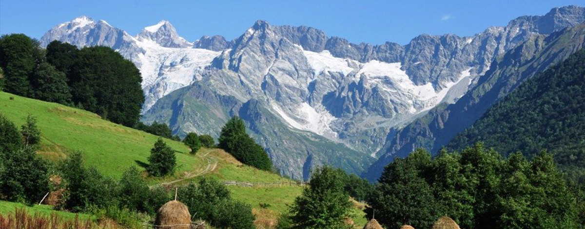
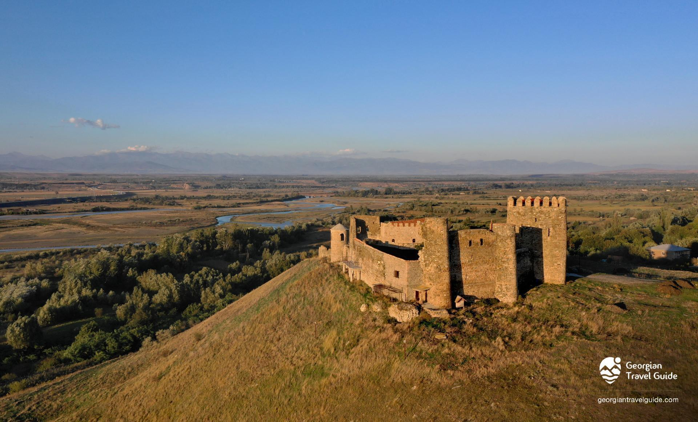
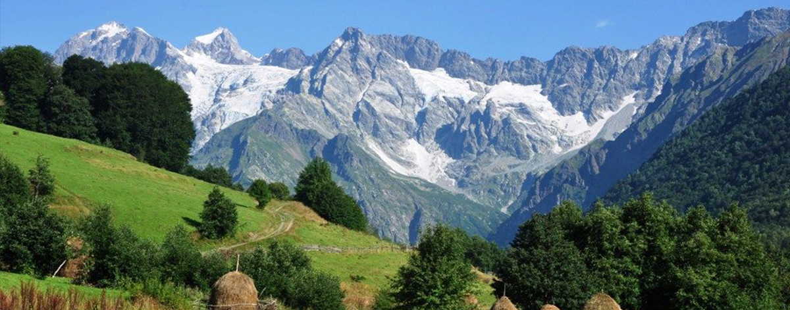
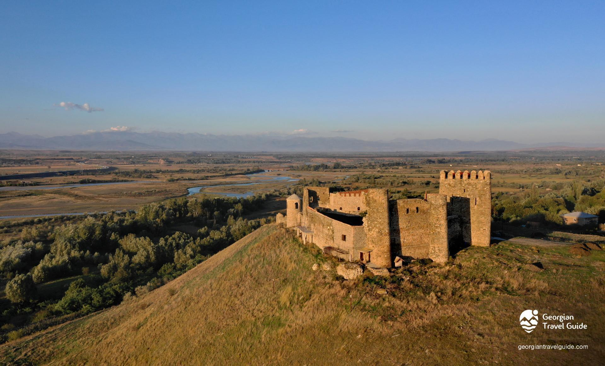

ლეგენდის თანახმად, თბილისის ტერიტორია ტყით ყოფილა დაფარული, ქართველ მეფეს (ერთ-ერთი ვარიანტით, ვახტანგ I გორგასალს) ნადირობის დროს შველი დაუჭრია, შველი ცხელ წყაროში განბანილა და განკურნებული გაქცევია მონადირეებს (სხვა ვარიანტით, მეფის მიმინო თავს დასცხრომია ხოხობს, ფრინველები ცხელ წყაროში ჩაცვივნულან და გაფუფქულან). ცხელი წყლის სამკურნალო თვისებებისა და ადგილის ხელსაყრელი მდებარეობის გამო მეფეს ტყე გაუკაფავს და ქალაქი გაუშენებია. „თბილისი“ — „თბილი“ (ძვ. ქართულად „ტფილი“) მინერალური წყაროების გამო უწოდეს ქალაქს. შემდგომში ამ ადგილზე გოგირდის აბანოები გაშენდა. აღნიშნული ადგილი თბილისის ისტორიული უბანი — აბანოთუბანია.
მოგესალმებით მეგობრებო თქვენ ამ საიტზე წაიკითხავთ პატარა ინფორმაციებს საქართველოს კუთხეების შესახებ. ვიცი ეს არ არის იმდენი ინფორმაცია რომ ყველაფერი გაიგოთ კუთხეების შესახებ მაგრამ იმედია ისიამოვნებთ.